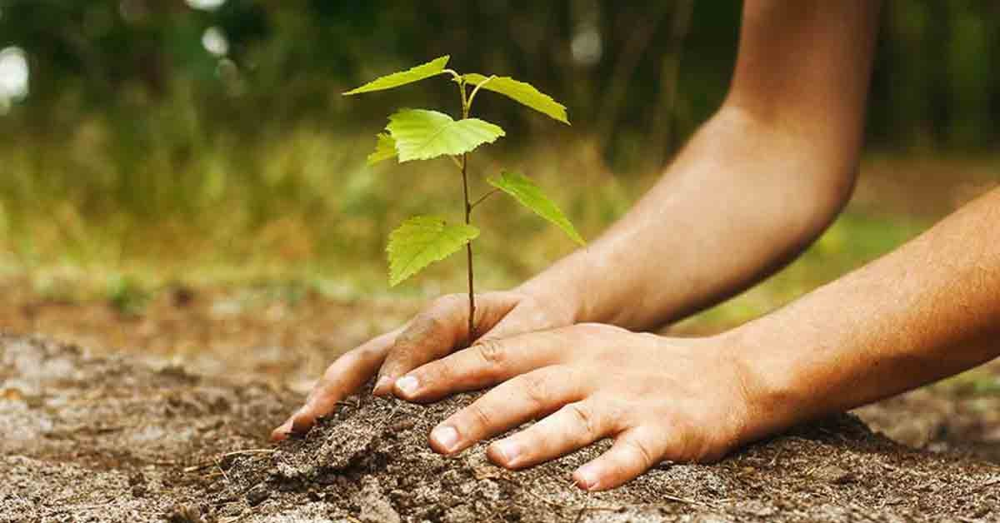
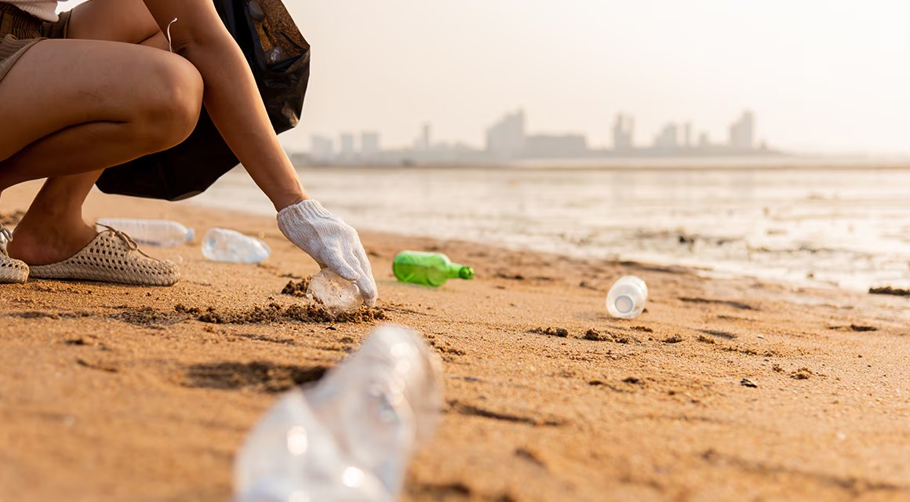
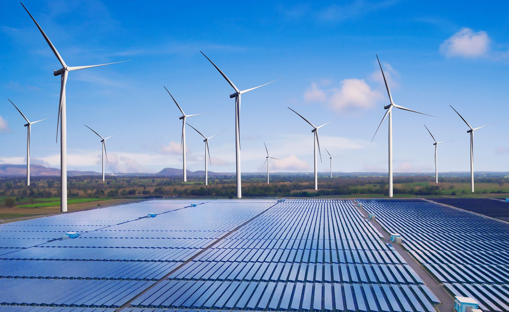

Actividades realizadas
- Reforestación comunitaria: comunitaria: Plantación de 500 árboles en áreas afectadas por deforestación.
- Charlas educativas: Talleres en escuelas sobre reciclaje y uso eficiente de recursos.
- Campañas de limpieza: Retiro de desechos en playas y ríos locales.
Próximos eventos
| Evento | Lugar | Fecha | Hora |
|---|---|---|---|
| Taller de Compostaje | Centro Comunitario | 15 de diciembre de 2024 | 10:00 AM |
| Charla sobre Cambio Climático | Auditorio Municipal | 20 de enero de 2025 | 4:00 PM |
| Jornada de Limpieza Costera | Playa Sur | 5 de febrero de 2025 | 8:00 AM |
Temas de interés
El cambio climático es uno de los mayores desafíos de nuestro tiempo. A través de actividades educativas y colaborativas, buscamos crear conciencia sobre la necesidad de reducir las emisiones de gases de efecto invernadero y promover el uso de energías limpias.
Material multimedia


